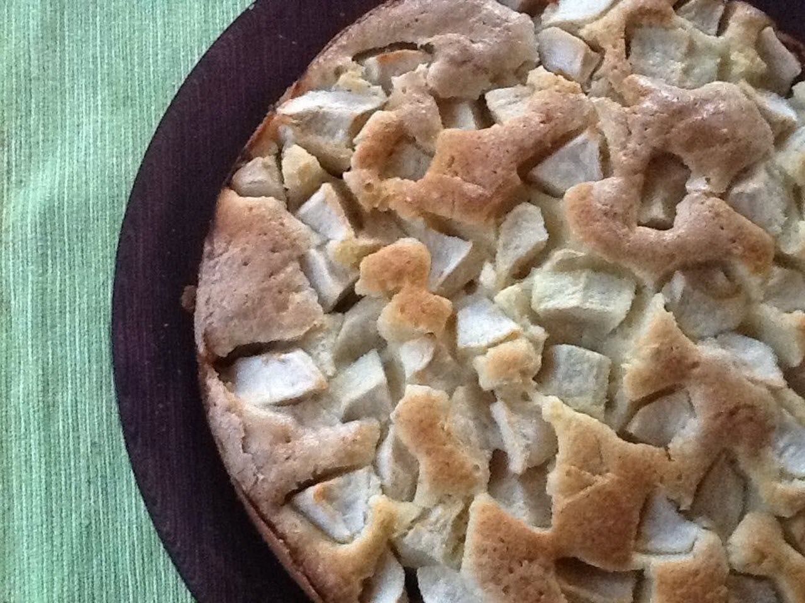

Torta di mele

This Italian apple cake recipe is from my mom and reminds me of my childhood. It tastes delicious, and I bake it for my family now.
Ingredients
- 2 tablespoons unseasoned bread crumbs, or as needed
- ½ cup unsalted butter, melted
- ½ cup white sugar
- 1 vanilla bean, split and scraped
- 2 eggs
- 1 ⅛ cups all-purpose flour
- 1 teaspoon baking powder
- 1 pinch salt
- 1 tablespoon milk, or as needed (Optional)
- 2 pounds Granny Smith apples, peeled, cored and sliced thin
- ¼ cup unsalted butter, cubed
- ¼ cup white sugar
Directions
- Preheat the oven to 375 degrees F (190 degrees C). Grease a pie plate and dust with bread crumbs
- Combine melted butter, 1/2 cup sugar, and vanilla bean seeds in a bowl. Add eggs and stir to combine. Mix flour, baking powder, and salt in a bowl and add to butter mixture. Add milk if batter is too thick
- Pour batter into the prepared pie plate. Distribute apple slices in a thick layer on top of the batter. Dot with cubed butter and sprinkle with 1/4 cup sugar.
- Bake in the preheated oven until a toothpick inserted into the center comes out clean, 30 to 45 minutes. Cool on a wire rack for 5 minutes. Run a table knife around the edges to loosen. Invert carefully onto a serving plate or cooling rack. Let cool completely.